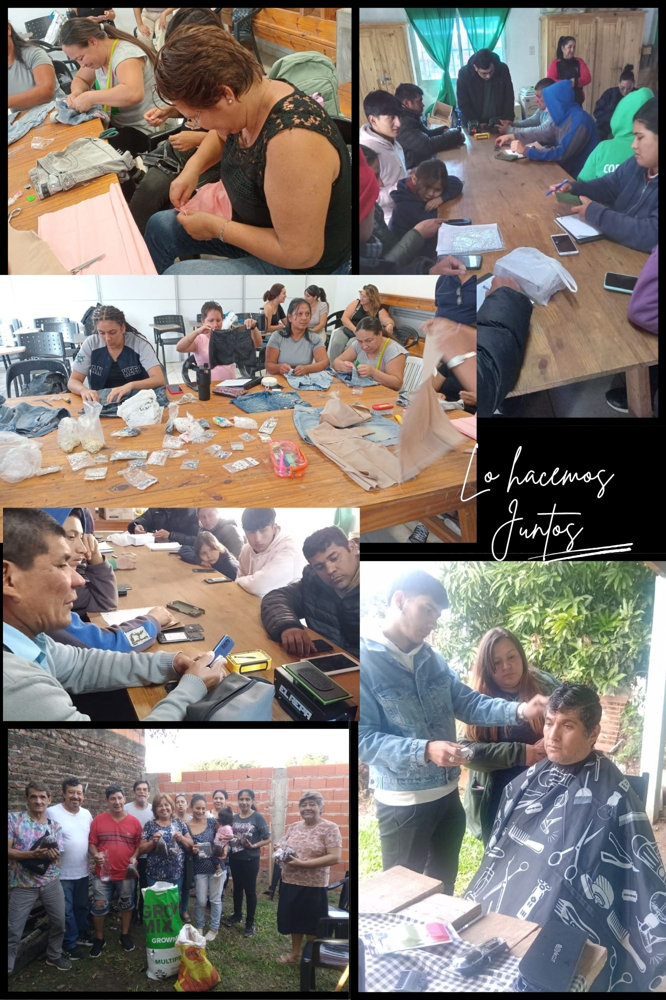

OBJETIVOS
Desarrollar una estrategia de mejora en la accesibilidad a políticas Sociales, Sanitarias, Educativas y ambientales de los asentamientos de la ciudad de Corrientes
Organizar las acciones necesarias para dotar de accesibilidad a los servicios Sociales, Sanitarios, Educativos y Ambientales a 3400 familias; poniendo el foco en la asistencia a mujeres, embarazadas, niños, adolescentes y personas vulnerables. Mejorar la gobernabilidad en estos territorios. Potenciar capacidades para el desarrollo de la empleabilidad. Capacitar en organización Comunitaria y liderazgo a líderes barriales
CORRIENTES CAPITAL
Asentamientos de los barrios Caridi, Quilmes, Santa Marta, Patono 1 y 2, Galvan 3, La Tosquera, San Jorge, San Roque Este, El Pinal, Fray Jose de la Quintana, Dr. Montaña, Pirayui, Costa Esperanza, Villa Tarima, Ciudades Correntinas, Ponce, Santa Rita Sur, Piragine, Taitalo, Sol de Mayo, Anahi, Bañado Norte y Cichero.Tiempo
Se viene realizando acciones para garantizar el acceso a la salud y a los derechos básicos de los habitantes de los asentamientos. Especialmente en aquellos asentamientos nuevos que no tenían ningún tipo de intervención estatal, por las condiciones de propiedad de la tierra y precariedad en el acceso de servicios públicos. Estas acciones buscan contribuir con la mejora de indicadores como mortalidad infantil, mortalidad materna, control periódico, retención escolar, terminalidad de escolarización primaria y secundaria, mejora de la empleabilidad, al tiempo que ha permitido mejorar la gobernabilidad del municipio
Somos
Buscamos consolidar los avances en la intervención en el territorio, sumando a la asistencia y gobernabilidad ya consolidada a temáticas que incidan en el desarrollo comunitario y social, sentando las bases de un desarrollo de la economía local, del concepto de ciudadanía y de la integración creciente a la ciudad
Reflexión final
somos primates
somos practicantes de programación
Talentos Digitales